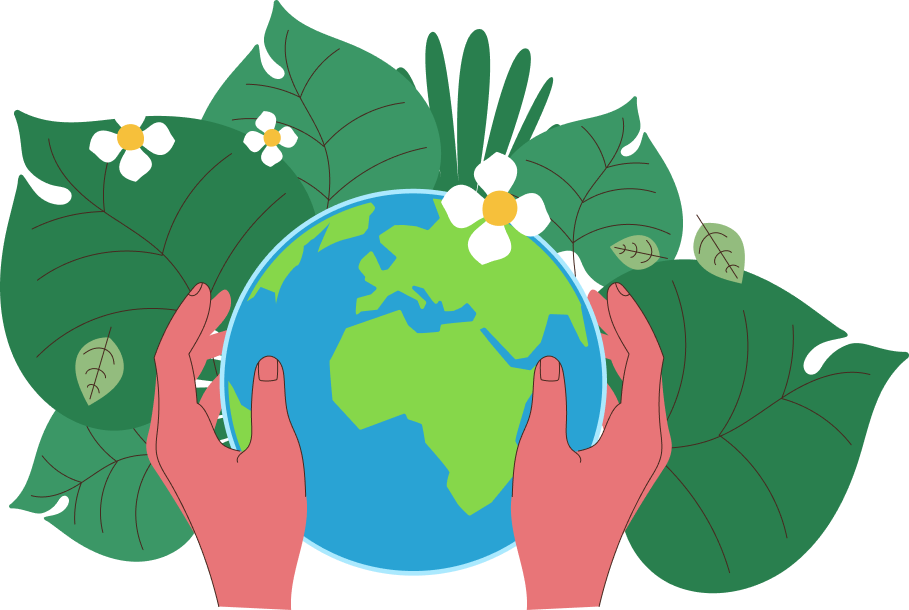

ESG
환경
environment자연과 인간을 위한 친환경 경영을 실천합니다.
인류의 소중한 자산인 환경의 보전은 미래 세대를 위한 모두의 과제입니다. 코오롱글로벌은 중장기 환경 전략인 Green2030을 구축하고, 글로벌 표준에 따른 환경경영시스템(ISO14001)을 바탕으로 체계적인 환경 경영을 실천합니다.
Green 2030
-
환경 정책 고도화
- 환경 경영 강화 및 투명한 환경 정보 공개
- 생물 다양성 보존을 위한 생태계 보전 활동 추진
-
신재생 에너지 활용
- 친환경 케이블 개발 확대
- 대기 및 수질 오염 물질 배출 최소화
-
환경 및 에너지 관리
- 환경 오염 방지를 위한 최신 시설 및 기술 도입
- 폐기물 재활용, 용수 재이용량 증대, 에너지 사용량 절감
-
신재생 에너지 활용
- 신재생 에너지 활용을 통한 친환경 사업장 운영
환경 방침
사람과 자연의 조화로운 공존을 지향하며 전담 부서의 주도하에 전사적 환경 경영을 전개합니다. 케이블, 케이블 접속재 등 제품의 생산과 솔루션 공급의 전 과정에 있어 환경 영향을 철저하게 관리하는 것은 물론, 위험 요인을 선제적으로 발견하고 대응하고 있습니다. 또한, 공급 업체를 대상으로 환경 관리 정책을 별도로 적용하여 정기적으로 점검하고 환경 교육을 진행하는 등 환경 관리 능력 향상을 위한 다양한 투자를 실시합니다.
가덕산풍력발전 2 단계 사업 공동개발 업무협약
유색 건물일체형 태양광 패널 시공
멸종 위기종 서식지 복원 사업
대기, 수질 등의 오염을 최소화하고 폐기물, 화학 물질, 온실가스 등을 법규보다 강화된 자체 기준으로 감축하여 건강한 지구 만들기에 앞장서겠습니다.
오염 물질 배출 허용 농도를 기준치 미만으로 엄격하게 관리합니다.
NOx(질소산화물), SOx(황산화물), 먼지 등의 대기 오염 물질과 BOD(생물학적 산소요구량), SS(부유 물질량), 오수량 등의 수질 오염 물질을 정기 모니터링하고 배출량 개선을 위해 설비 운영 방법을 지속 개선하며 사전 점검을 통해 만일의 사고를 예방합니다.
- 특수 정화시설 마련
- 청정원료(LNG) 사용
- 대기오염물질 자발적 감축 협약 체결
- 고효율 오수 및 폐수 처리 시스템 운영
- 폐수 100% 재이용
온실가스 및 에너지의 배출 총량 관리와 원 단위 감축을 위한 목표를 수립하고, 관련 투자를 확대합니다.
에너지 사용량과 CO2(이산화탄소), CH4(메탄), N2O(이산화질소) 등의 배출량을 정량화 하는 동시에 제3자 검증을 진행하여 신뢰성을 확보하고 있습니다.
- CDP(탄소 정보 공개 프로젝트) 참여
- 온실가스 배출권 거래 제도 참여
- IFS를 이용한 중앙전력제어시스템
- 온실가스 인벤토리 관리
- 고효율 설비 및 LED전등 도입
폐기물 관리 기준을 수립하고 적법한 처리를 통해 환경 오염을 방지합니다.
자체 화학 물질 관리 프로그램의 개발으로 체계적인 관리 시스템 하에 배출량, 유해 화학 물질 취급 등의 모니터링을 실시합니다. 환경부의 ‘플라스틱 폐기물 회수 재활용 자발적 협약’ 체결, 자원 순환 성과 관리 제도를 통한 순환 이용률 달성, 화학 사고 예방 계획의 수립을 기반으로 한 지역사회 안정성 보장 등 다양한 활동을 실시합니다.
- 자체 화학물질 관리 프로그램 개발
- 환경부 ‘플라스틱 폐기물 회수 재활용 협약’ 체결
- 자원 순환 성과 관리제도 시행
- 장외영향 평가